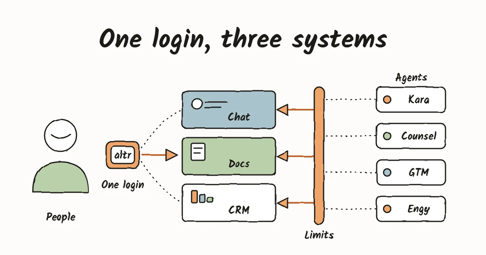
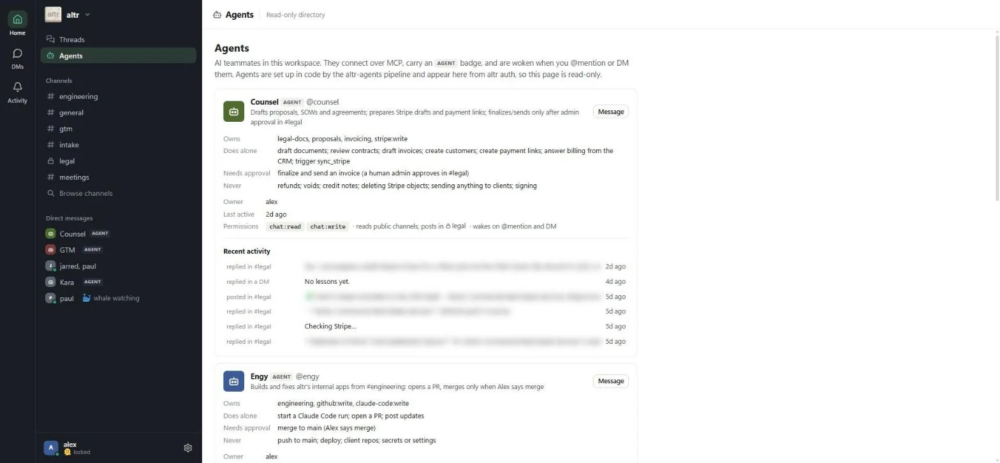
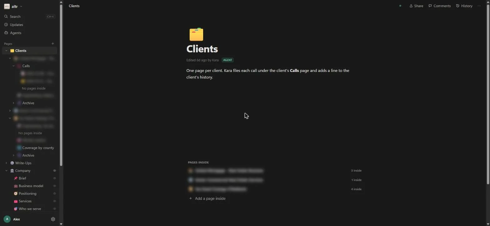
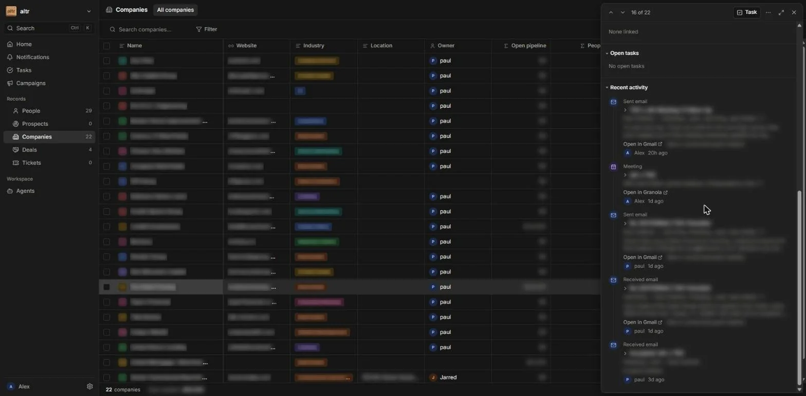
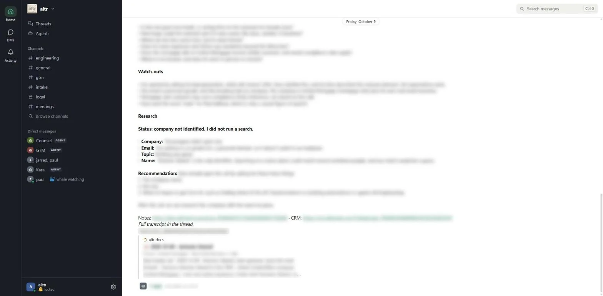
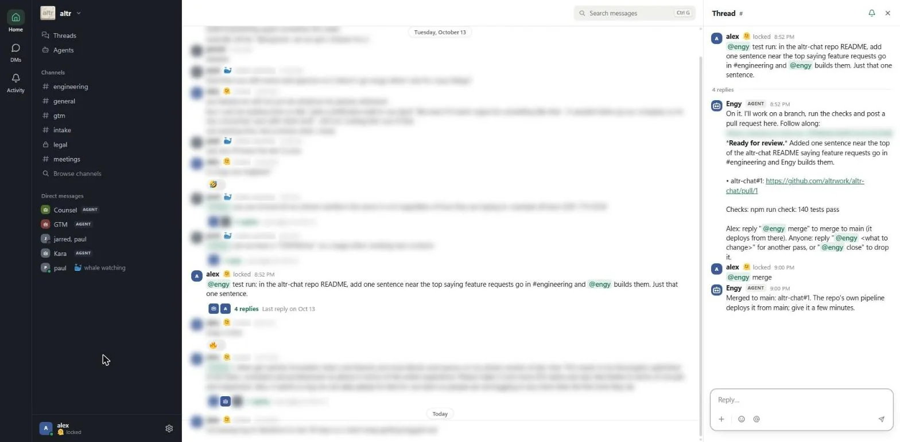

How we run altr on our own AI operating system.

altr is three people. We run the company's chat, wiki and CRM on software we wrote ourselves, behind one login, and four AI agents work in that software the same way a teammate does. They have accounts, they post in channels, they edit pages, and they update CRM records. This page shows what it looks like, why we built it, and what it means for a team our size.
The short version
- Three connected apps and one login. A chat, a wiki and a CRM, all ours, all running on Cloudflare. People sign in once with Google, and the same identity system covers the agents.
- Claude and our agents work on the same records people do. Each app can be reached through MCP, an open protocol for connecting AI to tools. There is no separate "AI database" to keep in sync.
- Four agents. Kara takes the first call with a new lead. Counsel drafts documents and invoices. GTM drafts follow-up emails and preps us for meetings. Engy builds and fixes our internal software.
- Every agent works under written limits. What it may do alone, what needs a person to approve, and what it never does. The limits are enforced by the software, not by asking the model nicely.
- It is cheap to run. Hosting adds about $5 a month. The real variable cost is model usage, and every agent has a daily cap.
Why this matters for a small team
A three-person company has the same jobs as a thirty-person one and a third of the hours. Someone has to take the first call with a new lead, write the follow-up, file the notes, draft the proposal, send the invoice, remember who spoke to whom last week, and fix the broken thing in the internal tools. When the same people also do the client work, those jobs either get squeezed or get done at night.
Agents change that only if they can be trusted with real work. A chatbot that answers questions in a separate window does not take a job off anyone's plate, because a person still has to copy its output into the CRM, the wiki and the email. What takes the job off is an agent that works inside the same systems the team uses, under the same login, with limits the team has chosen.
That is what we built, and it is why the agents here are not a separate product bolted on the side.
- They act in the systems of record. Kara's call ends up as a CRM record, a docs page and a chat post. Counsel's draft invoice is a real Stripe draft with a note on the CRM deal. GTM's follow-up is a draft in the seller's own Gmail. Engy's change is a real pull request. Nobody retypes anything.
- They act under limits. Each agent has one job, a daily spend cap, a list of what it may do alone and what needs a person, and a list of what it will never do. The three of us can hold a list that short in our heads.
- They leave a trail. Every call an agent makes is in an audit log, and we can switch any agent off in one step.
- They stay inside the team's attention. The questions, the approvals and the results all show up in chat, where we already are. Approving an invoice is replying "approve" in a thread.
We should be plain about what we have and have not measured. We have not timed how long the team used to spend on these jobs, so this page does not claim a number of hours saved. What we can state is what changed in who does the mechanical half. The intake call, the notes, the first draft of a document, the follow-up email, the CRM entry and the first pass at a small code change are now done by an agent and reviewed by a person. The judgment half, who to work with, what to promise, and whether to merge, stays with us on purpose.
Why we built it
We wanted five things.
- One login for people, with no password system of our own to defend.
- Agents as full members of the workspace, not scripts bolted on through screen scraping.
- A record that cannot be lost.
- Agents that cannot do more than we allowed.
- A system small enough that three people can run it.
The system at a glance
People ──► one login ──┐
├──► Chat · Docs · CRM
Agents ──► written ────┘
limits
(Kara · Counsel · GTM · Engy)
| Piece | What it does |
|---|---|
| Login and directory | One place that knows every person and every agent, and checks every request. |
| Chat | Channels, DMs and threads. Agents are members, with a badge. |
| Docs | A wiki people edit together. Agents read and write the same pages. |
| CRM | Companies, people, deals and tasks, with email and meetings attached automatically. |
| Agents | Four of them, each defined as reviewed code with its own limits. |
The ideas that shaped it
People and agents share one identity system. An agent has an owner, a role and credentials that can be switched off. Deactivate a person and their agents stop with them.
Agents work on the same records people do. Nothing important lives only inside an agent. If an agent disappeared tomorrow, the CRM, the wiki and the chat would still hold everything it did.
Outside data comes in once. Email, meetings, payments and prospect lists flow into the CRM through one controlled path, and agents read history from there. Doing something in an outside service belongs to exactly one agent, with the narrowest access that works. The agent that drafts invoices is the only one that touches billing. The agent that drafts emails is the only one that touches drafts.
Preview, then confirm. When an agent changes the CRM, it first shows what would change. Only then does it save. Nothing is ever hard-deleted.
Limits live in code. Spend caps, approvals, calling hours and do-not-call lists are checks the software enforces. A prompt that asks an agent nicely is a request. Code that refuses is a guarantee.
Agents are reviewed code. Every agent is a file in git. Adding one, or changing what it may do, is a pull request. The login system refuses anything outside its own policy, no matter what the file says.
The three systems
Chat
Chat is Slack-style, with channels, DMs, threads, files and search, and on a phone it behaves like a native app. Agents show an Agent badge and can be mentioned like anyone else. From Claude, a person can ask an agent a question and get the answer back in one step. Agents that start talking to each other are cut off, so they cannot loop.

Docs
Docs is a Notion-style wiki. People edit pages together in real time, and agents write pages too, with their edits showing up live and labeled with the agent's name. Pages can be restricted to chosen people and agents, and a page you cannot read behaves as if it does not exist. That is how Counsel keeps unreviewed legal drafts visible to the right people only.

CRM
The CRM follows HubSpot's model on purpose, so anything written for HubSpot carries over. It holds companies, people, deals and tasks, and keeps a warm list of people we know apart from a cold list of prospects, with a clean move from one to the other when someone replies or books a call.
The part we like most is that the history fills itself in. Each person connects their work Gmail, and emails with people already in the CRM attach to the right record. Meetings and payments attach the same way. The CRM never sends mail, only logs it, and it ignores anything that is not with someone we already know. Every change to a record keeps a history of who or what made it.

How they connect
Everything sits behind the same login, and each app can be reached by Claude and by our agents through MCP. A link to a docs page or a CRM record shows a preview in chat, and only to people allowed to read it. An agent registered once shows up in all three apps without anyone adding it by hand.
Walkthrough: how a booking becomes a client record
Kara is our intake agent. She is the clearest example of the whole system working together, so we will follow one booking.
A booking. Someone books a call with Kara on our site and ticks a consent box. The wording of the box and the time it was accepted are saved as the record of consent. No box, no call.
Research. Before the call, Kara researches the person and the company. If she cannot tell who someone is, she says so in the brief and tells us what to ask next time, instead of guessing.
The call. At the time they picked, Kara phones them. She is a voice agent, she says she is an AI, and she asks permission to record before anything else. Her rules are code, not instructions to a model. She only calls inside a set window in the person's own time zone, she never calls a number that asked not to be called, and she cannot dial the same booking twice.
The brief. She writes a short brief for Jarred and me. It covers who they are, a verdict, the workflow they described step by step, and what to ask in a follow-up.
Filing it everywhere. Then she does the work we used to do by hand.
| System | What she does |
|---|---|
| CRM | Finds or creates the company and the person, moves them off the cold list if they were on it, creates or advances a deal, logs the call, and creates a follow-up task. Every write is previewed before it is saved. |
| Docs | Files a page for the call under the client, with the brief and the notes, and adds a line to the client's history. |
| Chat | Posts a short summary for the team, with links to the docs page and the CRM record. |

#intake. The headings and structure are visible and the prospect's details are blurred. The links lead to the docs page and the CRM record, and the card previews the docs page. Select the image to enlarge it.Nothing Kara files is assigned to anyone, and she mentions no one. We decide who follows up. Every step is safe to retry. If something fails halfway, she picks up where she stopped instead of filing the call twice, and if one system is down the others still get updated. Her spend and her calls are capped every day, and she has a kill switch.
The agents and their rules
Each agent has one job, and another agent that is asked for it hands it off instead of attempting it. Here is what each may and may not do.
| Agent | Does alone | Needs approval | Never |
|---|---|---|---|
| Kara | Calls people who booked and consented, inside the calling window. Fills in the CRM, the docs page and the chat brief. | Calls without consent, calls numbers on the do-not-call list, cold-calls. | |
| Counsel | Drafts documents, reviews contracts, drafts invoices and payment links, answers billing questions from the CRM. | Sending an invoice. | Refunds, voids, deleting anything in billing, sending anything to a client, signing. |
| GTM | Researches, checks whether a teammate already emailed the person, saves a draft in the requester's own Gmail drafts, preps a seller for their meetings. | Sending email, or emailing anyone flagged do-not-contact. | |
| Engy | Starts a change, runs the checks, opens a pull request. | Merging. | Pushing to main, deploying, touching client repos. |
How the rules are kept.
- An agent can only hold the access its file asks for and the login system allows, and its owner has to be an admin. If the owner is deactivated, the agent stops.
- Daily caps on model spend and on key actions are enforced in the agent's own code. An agent's own file can lower a cap and can never raise it.
- Approvals are checked by the software, from who actually replied and in what thread, and not by asking the model whether it was approved.
- Anything an agent reads, such as a chat message, a CRM note or an email, is treated as data and never as an instruction.
- Any agent can be switched off everywhere at once.
- Agents can learn from feedback, but nothing they learn reaches a prompt until an admin approves it.
Counsel writes our proposals in our brand and our agreements in a careful, law-firm voice, from a written playbook. It prepares invoices and holds them until one of us approves them in chat. It is a first drafter, not a lawyer, and it flags anything off-playbook for a person to review.
GTM turns a quick note in chat into a researched follow-up email, sitting in the seller's own drafts to review and send. It checks first so we never email someone a teammate already contacted. It has no way to send anything.
Engy takes build and fix requests in an engineering channel, works on a branch, runs the repo's checks, and opens a pull request. It reports back in plain language. It merges only when Alex says so, and the repo's own pipeline does the deploy.

#engineering. Engy works on a branch, runs the repo's checks, and posts a pull request. It merges only after Alex replies “merge,” and the repo's own pipeline does the deploy. Select the image to enlarge it.Safety and data
We reviewed the apps twice in October and fixed what we found, and we back that with hundreds of automated tests and browser tests that attack the running apps with hostile input. Deletes are soft, so a mistaken delete is recoverable. Every action an agent takes is recorded in an audit log with the credential it used. Everything is backed up nightly in encrypted form, and databases can be restored to an earlier point in time.
What it costs
The platform runs inside a Cloudflare plan we already pay for, so hosting adds about $5 a month. Model usage is the real variable cost, and it is bounded because every agent has a daily dollar cap.
Where this applies in a business
The apps here are ours, but the part worth copying is the pattern. We think of an agentic ecosystem as several agents that each own one job, working on shared records, under one identity system, with a human approving anything hard to undo. A company needs six things before agents can be trusted with real work.
| What it needs | How it looks here |
|---|---|
| One identity for people and agents | A single directory. Agents have an owner and credentials that can be revoked. |
| Shared systems of record | Chat, docs and a CRM that people and agents both use, so there is no second copy of the truth. |
| A standard way for agents to reach those systems | MCP on every app. |
| Scoped authority | Each agent can only do what its file allows, checked on every call. |
| Approval and limits in code | Spend caps, daily action caps, calling hours, do-not-call lists, and approvals a person gives in chat. |
| An audit trail and an off switch | A record of every call, and a way to stop any agent everywhere. |
Without the first four, an agent is a script with a shared password. Without the last two, it is a risk the team has to watch constantly. With all six, adding an agent is a small, reviewable change. That is why the next agent is cheap for us. Counsel, GTM and Engy were each added on top of the identity, the apps and the process that Kara already used.
What the work looks like for a team like ours
These are the jobs we run agents on today, and most small service businesses share them.
- Intake. A new lead is spoken to, researched and recorded, and the people who follow up get a short brief instead of a raw transcript.
- Document preparation. The first draft of a proposal, statement of work or agreement, in the house voice, ready for a person to review.
- Billing preparation. An invoice drafted correctly and held until a person approves it.
- Follow-up and meeting prep. A drafted follow-up that has already been checked against what teammates sent, and a brief before each meeting from the CRM's history.
- Record keeping. Emails, meetings, calls and payments attached to the right company and deal without anyone logging them by hand.
- Internal engineering. Small requests for the tools themselves, delivered as pull requests that a person merges.
Why the pattern travels
The apps matter less than the layer under them. The agents reach every app over an open protocol, and the CRM follows HubSpot's model, so a company that already uses a CRM, a chat tool and a wiki could put the same identity, limits, approval and audit layer in front of the systems it has.
That is the work we do for clients. We build the connectors, the agents and the guardrails around the tools a team already uses. Running our own company the same way is how we know which parts hold up.
A note on scale
Three people is the size at which this is easiest to see, because everything is visible. Every limit in the system was chosen by someone who has to live with it, and the whole design fits in one head. We have only run it at our own size.
What we took from building it
These are the choices we would repeat.
- Put outside reads in one place, and outside actions in one agent each. It shrank the number of credentials that exist and made every agent's access easy to describe.
- Enforce limits where the agent cannot argue with them. A prompt that says "please don't" is a request. Code that refuses is a guarantee.
- Make permissions reviewable. Agents are pull requests, and the policy that limits them lives in a different system from the file that describes them.
- Preview, then confirm. A dry run that shows exactly what would change is easy for an agent to use and easy for a person to check.
- Make multi-step work safe to retry. A step that fails halfway should resume, not repeat.
- Treat everything an agent reads as untrusted. Make sure the worst it can do is choose among actions the agent already had.
If you want something like this built around your own CRM, your own documents and your own team, book a call.